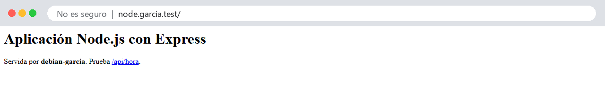

Práctica 3.2 - Aplicación Node.js con Express como servicio¶
Cuándo se hace
Al terminar el bloque 3 de la teoría del Tema 3, con la práctica 3.1 terminada. En la máquina principal.
Objetivos
Al terminar esta práctica deberás ser capaz de:
- Crear un proyecto de Node.js con npm y distinguir dependencias de producción y de desarrollo.
- Escribir una aplicación mínima con Express que lea su configuración de variables de entorno.
- Instalar las dependencias en el servidor de forma reproducible con
npm ci. - Convertir la aplicación en un servicio de
systemdcon un usuario sin privilegios. - Publicarla detrás de Nginx y desplegar una versión nueva.
1. Qué vas a montar¶
Tu ordenador debian-tuapellido (192.168.56.10)
192.168.56.1 ───► Nginx :80 ──── node.tuapellido.test ───► node app.js 127.0.0.1:3000
(servicio node-app, usuario www-data)
A diferencia de la práctica 3.1, aquí no hay un servidor donde desplegar: tu aplicación es el servidor.
2. Instalar Node.js y npm¶
La instalación es grande: el npm de Debian arrastra cientos de paquetes node-* (unos 560 paquetes, 200 MB de descarga y casi 900 MB en disco). Es normal.
3. Crear el proyecto¶
La aplicación vivirá en /var/www, como las webs del Tema 2, y será tuya (el servicio solo necesitará leerla):
sudo mkdir /var/www/node.garcia.test
sudo chown $USER:$USER /var/www/node.garcia.test
cd /var/www/node.garcia.test
npm init -y
Wrote to /var/www/node.garcia.test/package.json:
{
"name": "node.garcia.test",
"version": "1.0.0",
"description": "",
"main": "index.js",
"scripts": {
"test": "echo \"Error: no test specified\" && exit 1"
},
"keywords": [],
"author": "",
"license": "ISC"
}
npm init -y crea un package.json con valores por defecto. Instala Express:
added 65 packages, and audited 66 packages in 5s
30 packages are looking for funding
run `npm fund` for details
found 0 vulnerabilities
Has pedido un paquete y se han instalado 65: Express y todas sus dependencias, y las dependencias de estas. Mira qué ha cambiado:
node_modules package.json package-lock.json
node.garcia.test@1.0.0 /var/www/node.garcia.test
└── express@5.3.0
package.jsontiene ahora"dependencies": { "express": "^5.3.0" }.package-lock.jsonguarda la versión exacta de los 65 paquetes.node_modules/contiene los 65 paquetes.
4. La aplicación¶
const express = require('express');
const os = require('os');
const app = express();
const PORT = process.env.PORT || 3000; // (1)!
const HOST = process.env.HOST || '127.0.0.1';
app.set('trust proxy', 'loopback'); // (2)!
app.get('/', (req, res) => {
res.send(`<h1>Aplicación Node.js con Express</h1>
<p>Servida por <b>${os.hostname()}</b>. Prueba <a href="/api/hora">/api/hora</a>.</p>`);
});
app.get('/api/hora', (req, res) => { // (3)!
res.json({
hora: new Date().toLocaleTimeString('es-ES', { timeZone: 'Europe/Madrid' }),
servidor: os.hostname(),
pid: process.pid,
entorno: process.env.NODE_ENV || 'sin definir',
cliente: req.ip
});
});
app.listen(PORT, HOST, (err) => { // (4)!
if (err) throw err;
console.log(`Escuchando en http://${HOST}:${PORT}`);
});
- Puerto y dirección salen de variables de entorno, con un valor por defecto. Por defecto, solo local.
- Le dice a Express que, si la conexión viene de la propia máquina (el Nginx local), se crea la cabecera
X-Forwarded-Forpara saber la IP del cliente. Es lo mismo queset_real_ip_fromen Nginx oRemoteIpValveen Tomcat. - Una ruta que responde JSON.
pides el número de proceso: te servirá para ver cuándo se reinicia la aplicación. - Abre el puerto. Si no puede (por ejemplo, porque ya está ocupado), termina con el error.
Por qué el if (err) throw err
En Express 5, si el puerto está ocupado, app.listen no lanza el error, sino que se lo pasa a la función. Con el típico () => console.log('Escuchando') de los tutoriales, la aplicación dice que escucha y termina en silencio. Con esta línea, verás el error de verdad:
Ahora edita package.json para que main apunte a app.js y para tener dos scripts, uno para producción y otro para desarrollo:
5. Probar en desarrollo¶
Arranca en modo desarrollo:
npm run ejecuta el comando con node_modules/.bin en el PATH, y nodemon no está ahí: nunca lo has instalado. Es una herramienta de desarrollo (reinicia la aplicación cada vez que guardas un fichero), así que se instala como tal:
Es posible que npm termine avisando de vulnerabilidades, por ejemplo:
2 moderate severity vulnerabilities
To address all issues, run:
npm audit fix
Run `npm audit` for details.
npm audit te dice cuáles son: un fallo conocido en una librería que usa nodemon. Es una dependencia de desarrollo, que no llegará al servidor (lo comprobarás en el apartado 6). No hagas npm audit fix --force: instalaría una versión anterior de nodemon, un cambio que puede romper cosas, solo para silenciar el aviso. Arranca en modo desarrollo:
[nodemon] 3.1.14
[nodemon] to restart at any time, enter `rs`
[nodemon] watching path(s): *.*
[nodemon] watching extensions: js,mjs,cjs,json
[nodemon] starting `node app.js`
Escuchando en http://127.0.0.1:3000
Mira el package.json: ha aparecido "devDependencies": { "nodemon": "^3.1.14" }. Desde otra terminal SSH:
{"hora":"18:42:19","servidor":"debian-garcia","pid":14303,"entorno":"sin definir","cliente":"127.0.0.1"}
Desde tu navegador, http://192.168.56.10:3000 no responde: la aplicación escucha solo en local. Para probarla desde fuera, para con Ctrl+C y arráncala con otra dirección, sin tocar el código:
Ahora sí: entra en http://192.168.56.10:3000/api/hora. Como no hay proxy de por medio, el cliente es directamente tu IP, 192.168.56.1. Esto es para probar; en producción irá detrás de Nginx. Para con Ctrl+C.
6. Preparar las dependencias de producción¶
En un servidor de verdad no copiarías tu node_modules: instalarías desde package-lock.json, sin lo de desarrollo. Simúlalo:
added 65 packages, and audited 66 packages in 2s
30 packages are looking for funding
run `npm fund` for details
found 0 vulnerabilities
ls: cannot access 'node_modules/.bin': No such file or directory
Vuelven a ser 65 paquetes, las versiones exactas del package-lock.json, nodemon no está y las vulnerabilidades del apartado 5 han desaparecido: eran de lo que no se instala en producción. Para ver lo instalado, npm ls necesita saber que has dejado fuera lo de desarrollo:
Sin --omit=dev, npm ls compara con todo el package.json, echa en falta nodemon y termina con un error (npm ERR! code ELSPROBLEMS y UNMET DEPENDENCY nodemon@^3.1.14). No es un fallo: es justo lo que has pedido.
7. La aplicación como servicio¶
[Unit]
Description=Aplicación Node.js de node.garcia.test
After=network.target
[Service]
User=www-data
Group=www-data
WorkingDirectory=/var/www/node.garcia.test
Environment=NODE_ENV=production
Environment=PORT=3000
ExecStart=/usr/bin/node app.js
Restart=on-failure
[Install]
WantedBy=multi-user.target
Se ejecuta con www-data, que puede leer la aplicación pero no modificarla, porque los ficheros son tuyos: si alguien encontrara un fallo en ella, no podría cambiar su código. Es la misma decisión que en la práctica 2.1. Fíjate también en que el servicio usa node app.js directamente y no npm start: así systemd vigila el proceso de Node y no el de npm.
● node-app.service - Aplicación Node.js de node.garcia.test
Loaded: loaded (/etc/systemd/system/node-app.service; enabled; preset: enabled)
Active: active (running) since Sun 2026-11-15 18:44:20 CET; 2s ago
Invocation: 767f6526928643ffadb41d8f84be97a9
Main PID: 14728 (node)
Tasks: 7 (limit: 2317)
Memory: 20.9M (peak: 21.3M)
CPU: 525ms
CGroup: /system.slice/node-app.service
└─14728 /usr/bin/node app.js
Nov 15 18:44:20 debian-garcia systemd[1]: Started node-app.service - Aplicación Node.js de node.garcia.test.
Nov 15 18:44:20 debian-garcia node[14728]: Escuchando en http://127.0.0.1:3000
¿Por qué sudo para ver el estado?
systemctl status funciona sin sudo, pero entonces no muestra las últimas líneas del registro: tu usuario no puede leer el diario del sistema (no está en los grupos adm ni systemd-journal). Con sudo las ves.
Unos 21 MB, frente a los 150 de Tomcat. Comprueba que ahora el entorno es production:
{"hora":"18:44:23","servidor":"debian-garcia","pid":14728,"entorno":"production","cliente":"127.0.0.1"}
Si el servicio falla al arrancar
Mira sudo journalctl -u node-app -n 20. Si dice EADDRINUSE, tienes todavía un npm start o npm run dev abierto en otra terminal ocupando el puerto 3000.
Si la aplicación muere, systemd la levanta¶
Mata el proceso a la fuerza, como si hubiera fallado:
Nov 15 18:44:24 debian-garcia systemd[1]: node-app.service: Main process exited, code=killed, status=9/KILL
Nov 15 18:44:24 debian-garcia systemd[1]: node-app.service: Failed with result 'signal'.
Nov 15 18:44:25 debian-garcia systemd[1]: node-app.service: Scheduled restart job, restart counter is at 1.
Nov 15 18:44:25 debian-garcia systemd[1]: Started node-app.service - Aplicación Node.js de node.garcia.test.
Nov 15 18:44:25 debian-garcia node[14768]: Escuchando en http://127.0.0.1:3000
Al instante vuelve a estar en marcha, con otro PID. Es lo que hace Restart=on-failure. Si la paras tú con systemctl stop, no la levanta: eso no es un fallo.
8. Publicar con Nginx¶
server {
listen 80;
listen [::]:80;
server_name node.garcia.test;
access_log /var/log/nginx/node.access.log;
error_log /var/log/nginx/node.error.log;
location / {
proxy_pass http://127.0.0.1:3000;
include proxy_params;
}
}
Actívalo, sudo nginx -t, recarga, y añade node.garcia.test a tu hosts. Entra en http://node.garcia.test:

Desde PowerShell:
{"hora":"18:44:31","servidor":"debian-garcia","pid":14768,"entorno":"production","cliente":"192.168.56.1"}
HTTP/1.1 200 OK
Server: nginx
Date: Sun, 15 Nov 2026 17:44:31 GMT
Content-Type: application/json; charset=utf-8
Content-Length: 106
Connection: keep-alive
X-Powered-By: Express
ETag: W/"6a-DxUuZY7WKztvgbVkiu0rK8hcZ1U"
El cliente es tu IP real gracias a trust proxy. Y fíjate en X-Powered-By: Express: la aplicación anuncia a cualquiera con qué está hecha, lo que facilita buscar fallos conocidos de esa tecnología. Lo quitarás en el siguiente apartado.
9. Desplegar una versión nueva¶
En app.js, justo debajo de const app = express();, añade:
Recarga http://node.garcia.test/api/hora: la cabecera sigue ahí. Node carga el código al arrancar y no vuelve a leerlo; nodemon reiniciaba solo, pero en producción no hay nodemon. Desplegar una versión nueva en Node es reiniciar el servicio:
Nov 15 18:44:45 debian-garcia systemd[1]: Stopped node-app.service - Aplicación Node.js de node.garcia.test.
Nov 15 18:44:45 debian-garcia systemd[1]: Started node-app.service - Aplicación Node.js de node.garcia.test.
Nov 15 18:44:45 debian-garcia node[14867]: Escuchando en http://127.0.0.1:3000
HTTP/1.1 200 OK
Server: nginx
Date: Sun, 15 Nov 2026 17:44:46 GMT
Content-Type: application/json; charset=utf-8
Content-Length: 106
Connection: keep-alive
ETag: W/"6a-a7zn10nIxvx+81uM0sC09kQ4BZY"
Si un despliegue nuevo añadiera dependencias, el orden sería: actualizar el código, npm ci --omit=dev, sudo systemctl restart node-app, y comprobar.
Reiniciar es cortar
Mientras el proceso se reinicia, Nginx no tiene a quién pasar las peticiones y responde 502. Aquí es un instante, pero en producción se evita con varias copias de la aplicación detrás de un balanceador (práctica 2.5): se reinician de una en una y siempre queda alguna atendiendo.
10. Haz la instantánea¶
Apaga la máquina y toma una instantánea: p3.2-node.
Cuestiones finales¶
Cuestión 1
¿Por qué npm run dev decía nodemon: not found si el script estaba bien escrito? ¿Qué cambió en package.json al solucionarlo?
Cuestión 2
¿Qué diferencia hay entre npm install y npm ci? ¿Cuál de los ficheros del proyecto subirías a un repositorio de Git y cuál no?
Cuestión 3
Explica qué hace cada línea de la sección [Service] de node-app.service. ¿Por qué www-data y no tu usuario?
Cuestión 4
Has arrancado la aplicación de tres formas: npm run dev, HOST=0.0.0.0 npm start y el servicio. ¿En qué dirección escuchaba en cada caso, y por qué la aplicación es la misma sin cambiar el código?
Cuestión 5
Compara cómo se despliega una versión nueva en Tomcat (práctica 3.1) y en Node. ¿Por qué en Node hay que reiniciar?
Entrega¶
Igual que en las prácticas anteriores: documento de evidencias (40 %) y demostración en clase (60 %).
Parte 1 — Documento de evidencias (40 %)¶
Un PDF llamado P3.2-Apellido-Nombre.pdf con portada, las evidencias (en texto, con comando y prompt) y las respuestas a las cuestiones.
| # | Qué hay que demostrar | Dónde | Comando cuya salida se pega |
|---|---|---|---|
| 1 | Las versiones instaladas | Principal | node -v y npm -v |
| 2 | El proyecto | Principal | cat package.json y cat app.js |
| 3 | El error de nodemon y su solución | Principal | npm run dev antes y después de instalarlo |
| 4 | Las dependencias de producción | Principal | npm ci --omit=dev y npm ls --omit=dev |
| 5 | El servicio | Principal | cat /etc/systemd/system/node-app.service y sudo systemctl status node-app |
| 6 | El reinicio automático | Principal | sudo journalctl -u node-app -n 5 tras el kill -9 |
| 7 | Quién ejecuta la aplicación y dónde escucha | Principal | ps -o user,pid,cmd -C node y sudo ss -tlnp (líneas de los puertos 80 y 3000) |
| 8 | La configuración de Nginx | Principal | cat /etc/nginx/sites-available/node.tuapellido.test |
| 9 | La aplicación a través del proxy, con la IP real | Tu ordenador | curl.exe http://node.tuapellido.test/api/hora |
| 10 | La versión nueva, sin X-Powered-By |
Tu ordenador | curl.exe -I http://node.tuapellido.test/api/hora |
Parte 2 — Demostración en clase (60 %)¶
Mini entrevista individual en la mesa del profesor, con la máquina encendida: muestras la aplicación en node.tuapellido.test, haces la tarea que se te pida (por ejemplo, añadir una ruta y desplegarla) y explicas una decisión o un concepto.
Criterios de evaluación¶
| Parte | Criterio | Peso |
|---|---|---|
| Documento | Las diez evidencias están completas, en texto y explicadas | 25 % |
| Documento | Las cinco cuestiones están respondidas con corrección y criterio propio | 15 % |
| Demostración | La aplicación funciona como servicio con www-data, solo en local, y se ve a través de node.tuapellido.test |
20 % |
| Demostración | Realizas la tarea que se te pide y explicas lo que haces | 20 % |
| Demostración | Explicas una decisión o un concepto con tus palabras | 20 % |
Antes de entregar, comprueba que…¶
- ☐
package.jsontieneexpressendependenciesynodemonendevDependencies. - ☐ El servicio
node-appestáenabledyactive (running), con el usuariowww-data. - ☐ La aplicación escucha en
127.0.0.1:3000, no en0.0.0.0. - ☐
http://node.tuapellido.test/api/horamuestra"entorno":"production"y tu IP real. - ☐ La respuesta ya no lleva
X-Powered-By. - ☐ Existe la instantánea
p3.2-node. - ☐ El archivo se llama
P3.2-Apellido-Nombre.pdf.